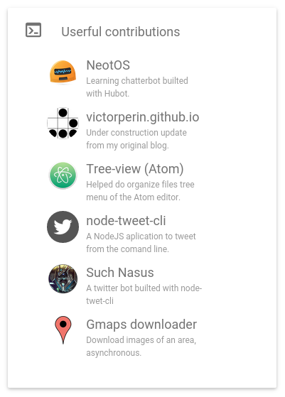
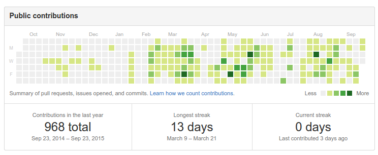
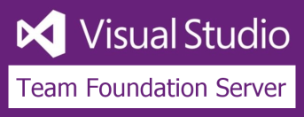
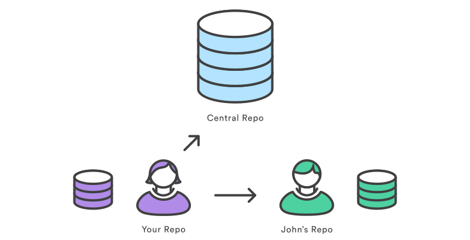
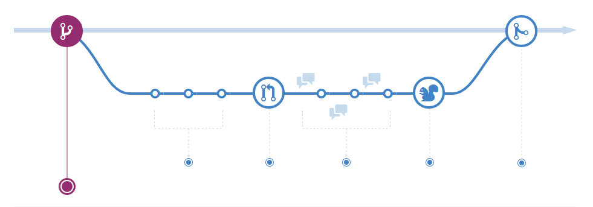
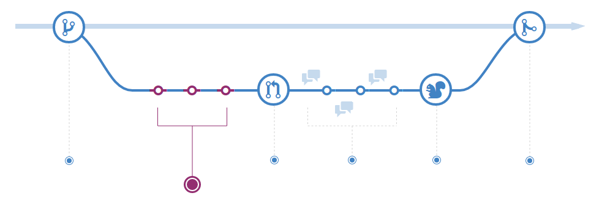
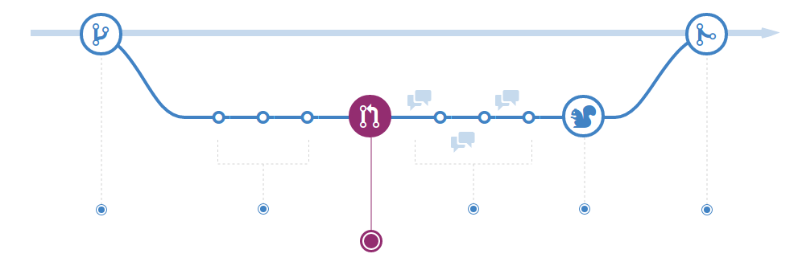
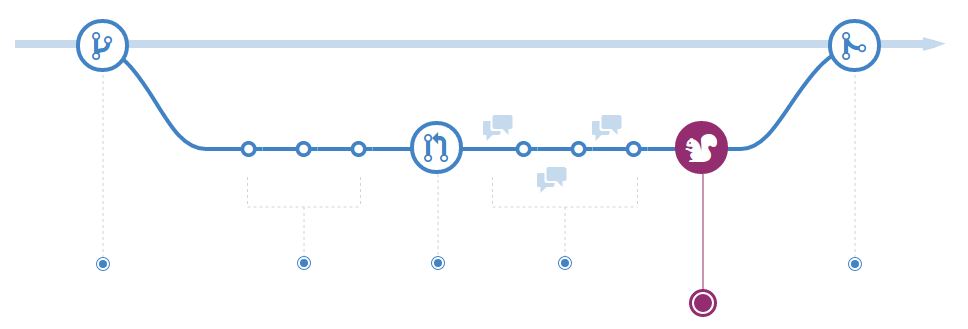
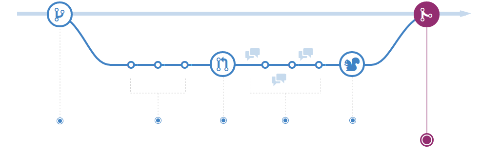

Versionando com
Git
quem é esse cara?
Oi, sou Victor Perin.
Eu trabalho atualmente na PrinciWeb, amo programar, adoro open-source...
e BACON!!1!
Onde eu uso git?
- Exercícios da Faculdade
- Trabalho
- Projetos pessoais
- Qualquer outra idéia
Contribuições
Suas contribuições para a comunidade retornam para você.
Controle de Versão?
Eu não preciso disso...
O que é esse tal de git
Git é um controle de versão distribuído, open-source e gratuito, pensado para ser usado dos projetos pequenos aos grandes com velocidade e eficiência.
Por que ele existe?
O Git foi criado por Linus Torvalds para controlar as versões do Linux.
Ele foi inspirado pelo BitKeeper.

Concorrentes?
O que o faz especial?


Vantagens específicas do Git
Sistema Distribuído
Cada cópia é um repositório git
Branches
Com o git é muito fácil trabalhar com branches
(vou explicá-los nos exercícios)

Merges
Junte um ramo da sua árvore

Como "geralmente" se trabalha com o git?
Você precisa se acostumar com controle de versão.
Não existe maneira definitiva para se trabalhar com git.
1- Criar um branch
a partir de um branch principal
2- Crie seus commits
Faça suas alterações no projeto
Para enviar as alterações para o servidor você utiliza o pull
3- Crie um pull-request
O senhor pode, por favor, aceitar meu PR?
4- Discussão
Converse com o seu time,
revise o código, corrija o que está errado.
4.5- Aprovação
Todos os envolvidos devem aprovar suas alterações.
5- Merge
Junte seu código com o repositório.
Exercícios!
Prepare-se para usar a Linha de comando.
Você vai precisar de:
- Linux/Windows/Mac
- Git
- Node.js
- Git-it
Instalando o Git-it
Execute na linha de comando:
(sudo) npm install -g git-it
Exercício 1
Instale o git no seu computador e configure seu nome e email.
git config --global user.name "Victor Perin"
git config --global user.email "me@victorperin.com"
Exercício 2
Criar um repositório no seu computador.
mkdir nome-pasta
cd nome-pasta
git init
Exercício 3
Criar um arquivo no seu repositório, adicionar alguma coisa nele e commitar essas mudanças no Git.
git add nome-do-arquivo.txt
git commit -m "sua mensagem de commit"
Exercício 4
Criar uma conta no GitHub e adicionar seu usuário ao Git config.
git config --global user.username seu_usuario
Exercício 5
Criar um repositório remoto (GitHub) e conecta-lo com seu repositório local.
git remote add nome_do_remote url_do_remote
git push nome_do_remote master
Exercício 6
Faça fork de um projeto do GitHub.com e clone-o localmente.
cd ..
git clone url_do_projeto
cd pasta_do_projeto
Exercício 7
Crie um branch para sua contribuição.
git branch nome_do_branch
git checkout nome_do_branch
PS: faça um novo commit, alterando os arquivos.
Exercício 8
Adicione um colaborador para o seu projeto.
(Operação feita apenas pelo github)
Exercício 9
Mantenha seus arquivos atualizados puxando alterações do projeto principal.
git pull nome_remoto nome_branch
Exercício 10
Enviar um pull request para o repositório principal.
(Operação feita apenas pelo github)
Exercício 11
Juntar seu branch localmente, deletar o antigo e puxar novos commits do repositório remoto.
git checkout gh-pages
git merge nome_do_branch
git branch -d nome_do_branch
git push nome_do_remoto --delete nome_do_branch
git pull upstream gh-pages